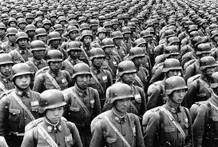
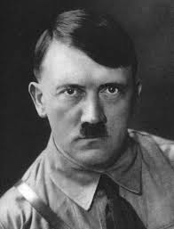
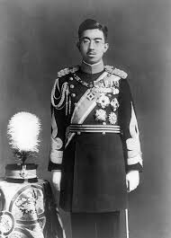

World War II began in Europe on 1 September 1939 with the German invasion of Poland and the United Kingdom and France's declaration of war on Germany two days later on 3 September 1939. Dates for the beginning of the Pacific War include the start of the Second Sino-Japanese War on 7 July 1937 or the earlier Japanese invasion of Manchuria, on 19 September 1931. Others follow the British historian A. J. P. Taylor, who stated that the Sino-Japanese War and war in Europe and its colonies occurred simultaneously, and the two wars became World War II in 1941.
World War II or the Second World War (1 September 1939 – 2 September 1945) was a global conflict between two coalitions: the Allies and the Axis powers. Nearly all the world's countries—including all the great powers—participated, with many investing all available economic, industrial, and scientific capabilities in pursuit of total war, blurring the distinction between military and civilian resources. Tanks and aircraft played major roles, with the latter enabling the strategic bombing of population centres and delivery of the only two nuclear weapons ever used in war. World War II was the deadliest conflict in history, resulting in 70 to 85 million fatalities, more than half of which were civilians. Millions died in genocides, including the Holocaust of European Jews, as well as from massacres, starvation, and disease. Following the Allied powers' victory, Germany, Austria, Japan, and Korea were occupied, and war crimes tribunals were conducted against German and Japanese leaders.
Adolf Hitler[a] (20 April 1889 – 30 April 1945) was an Austrian-born German politician who was the dictator of Nazi Germany from 1933 until his suicide in 1945. He rose to power as the leader of the Nazi Party,[c] becoming the chancellor in 1933 and then taking the title of Führer und Reichskanzler in 1934.[d] His invasion of Poland on 1 September 1939 marked the start of the Second World War. He was closely involved in military operations throughout the war and was central to the perpetration of the Holocaust: the genocide of about six million Jews and millions of other victims.
Hirohito[a] (29 April 1901 – 7 January 1989), posthumously honored as Emperor Shōwa,[b] was the 124th emperor of Japan according to the traditional order of succession, reigning from 1926 until his death in 1989. He was one of the longest-reigning monarchs in the world, with his reign of 62 years being the longest of any Japanese emperor.
